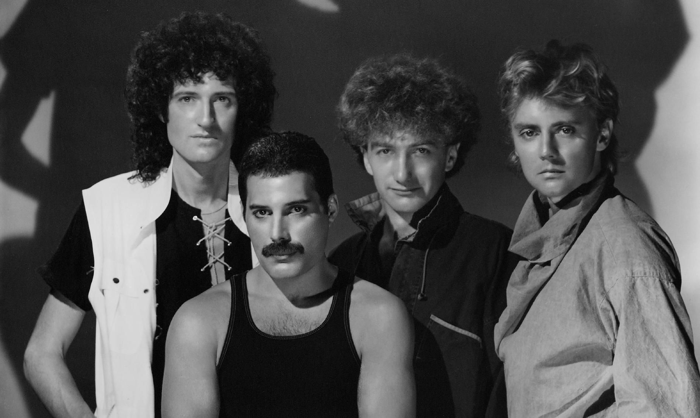

queen
Banda británica de rock formada en 1970 en Londres.

Integrantes del grupo
Brian May
freddie mercury
john deacon
roger taylor
Discografia
Grandes éxitos de Queen
Anio
Disco
1975
A kind of Magic
1986
A night at the opera
1989
The miracle
"A kind of Magic" fue el álbum más exitoso.
Sitio web oficial
www.queenonline.com